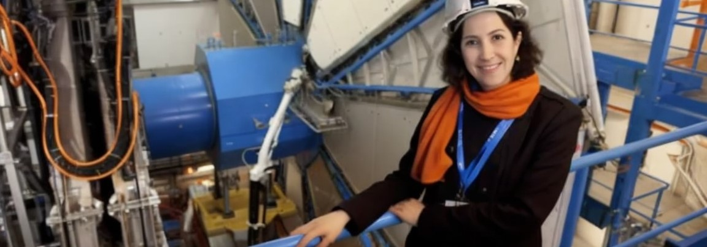

Fabiola Gianotti
 Nata nel 1960 il 29 Ottobre a Roma, Fabiola Gianotti a soli 7 anni si trasferisce con la sua famiglia a Milano,
dove frequentò la scuola media "Tommaseo", per poi succesivamente inscriversi al liceo classico delle Orsoline.
Dopo essersi appassionata in particolar modo alle materie scientifiche, con una preferenza particolare per la fisica,
finì per scegliere quest'ultima come facoltà all'università statale di Milano, spinta anche dalla lettura che ha fatto della biografia della fisica,
chimica e matematica di Marie Curie e la spiegazione dell'effetto fotoelettrico di Albert Einstein.
Riesce a lauerarsi nel 1984 con l'indirizzo sub-nucleare, ma non si fermò lì, poichè nello stesso anno della sua laurea decise di iniziare un dottorato di ricerca,
ispirata dall'assegnazione del premio Nobel a Carlo Rubbia, con argomento scelto le particelle elementari;
portando così la sua tesi per il dottorato un'analisi dei dati dell'esperimento UA2.
Nel 1987 entra a far parte del CERN di Ginevra, contibuendo a diversi esperimenti, come ALEPH al LEP e UA2 al super Proton Synchroton.
Successivamente, circa all'inizio degli anni 90, Fabiola Gianotti comincia a lavorare sull'argon liquido e mel 1992 partecipa all'esperimento Atlas,
ritenuto ancora il più grande esperimento scientifico della storia, che coinvolse fisici provenienti da 40 paesi di tutto il mondo.
Fabiola Giannotti fù anche un personaggio importante all'interno di questo esperimento, poichè fù lei a coordinarlo dal 1999 al 2003, ed inseguito anche nel 2009,
proprio quando è stata nominata Commendatore dell'Ordine al merito della repubblica Italiana in virtù delle sue conoscenze scentifiche e l'abilità di guida dell'esperimento Atlas,
sommato al suo contributo al prestigio della comunità di scienziati italiani nel settore della fisica nucleare.
Nel 2012, in veste di portavoce dell'esperimento, nel corso di una conferenza tenuta con il portavoce dell'esperimento CMS Joseph Incandela all'interno dell'auditorium del CERN,
ha fatto notare al mondo che è stata osservata per la prima volta una particella compatibile con il bosone di Higgs;
spiegando che alcune particelle sono dotate di massa e altre invece ne mancano, come ad esempio accade al fotone,
ma comunque, queste ultime, sono della pura energia in grado d viaggiare alla velocità della luce.
Questa è stata un'incredibile scoperta prima ritenuta mistero, che ha portato a comprendere che essa dipende dalle varie interazioni tra le particelle e il bosone.
Nello stesso anno, Fabiola Gianotti, ricevette l'onorificenza di Grande Ufficiale dell'Ordine al merito della Repubblica Italiana,
mentre il comune di Milano le conferisce l'Ambrogino d'Oro
Le fù anche assegnato il Fundamental Physics Prize, con la rivista Time, che la inserì al quinto posto nelle persone dell'anno.
Dal 2013 lasciò la carica di portavoce dell'esperimento Atlas e venne nominata professore onorario all'Università di Edimburgo
e in occasione dell'assegnazione del premio Nobel per la fisica riconosciuta per l'istituzione sulla particella di Dio, Peter Higgs la volle al suo fianco.
Ma i suoi premi vinti nel 2013 non finirono qui, poichè ricevette dalla società Italiana di Fisica il Premio Enrico Fermi, aggiunto al Premio Nonino,
assegnatole per riconoscere il potenziale immenso che ha una ricerca.
Alri riconoscimenti del suo prestigio è come il fatto che il suo nome è nell'elenco delle 100 donne più potenti al mondo, per la precisione,
al 78esimo posto nella classifica e unico nome italiano oltre a quello di Miuccia Prada, stilato ogni anno dalla rivista "Forbes".
Altro riconosciento è nel 2014, quando viene scelta dalla 17esima sessione del consiglio CERN per la carica di direttore generale,
facendola diventare la prima donna nella storia con tale incarico; nomina formalizzata nella sessione del consiglio del mese successivo.
Fabiola Gianotti è la terza italiana chiamata a dirigere il CERN, dopo Carlo Rubbia, in casica dal 1989 al 1994 e Luciano Maiani che invece era in carica dal 1999 al 2003.
Il 9 dicembre del 2014 viene nominata Cavaliere di Gran Croce dell'Ordine al merito della repubblica Italiana su iniziativa di Giorgio Napolitano, presidente della Repubblica.
Nel 2016, il primo Gennaio, finì per assumere la direzione del Cern di Ginevra, diventando così per la prima volta in 60 anni la prima donna a guidarlo,
dove viene confermata come direttrice generale nel 2019.
Possiamo vedere quindi che la sua vita ha avuto molti successi nel mondo della scienza, ma si è scoperto che Fabiola Giannotti ha con se anche una propria vena artistica;
Infatti è un'amante della musica, in particolare quella classica e della sua formazione umanistica,
un'amore che l'ha portata a diplomarsi al conservatorio in pianoforte e a diventare un'esperta danzatrice
E' stato fatto anche un ducumentario dedicato a lei, dove essa racconta in prima persona come diventare una delle donne scienziate più importanti al mondo
e le curiosità e domande che si è fatta per arrivare dov'è adesso